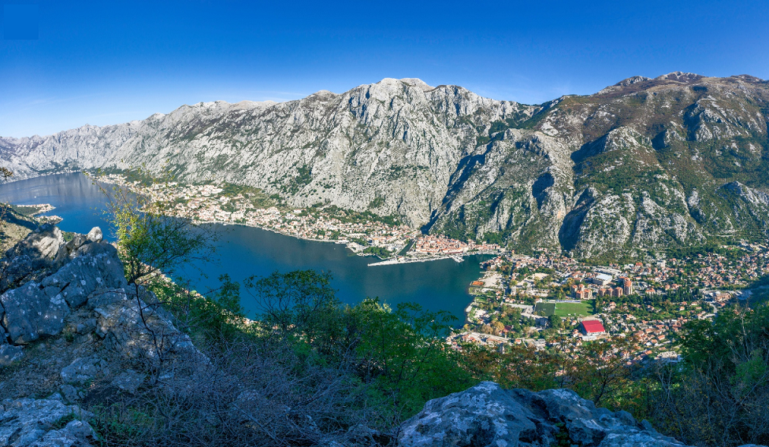

СÑеван СÑ. ÐокÑаÑаÑ: ÐевеÑа Ð ÑÐºÐ¾Ð²ÐµÑ (1896)
Stevan St. Mokranjac: Neuvième Guirlande (1896)
"ÐеÑме из ЦÑне ÐоÑе - Chants du Monténégro "

KoÑop - Kotor
|
|
|
|
Ðезе ка пеÑмама 1 - 4 -oOo- Liens vers les chants 1 - 4

ÐевеÑа Ð ÑковеÑ
Ðзводи Ð¥Ð¾Ñ Ð Ð¢Ð-а ÐеогÑад. ÐиÑигенÑ: Ðладен ÐагÑÑÑ (маÑоÑ)
Ð¥Ð¾Ñ Ð Ð°Ð´Ð¸Ð¾-ÑелевизиÑе ÐеогÑад Ñед. Ðладен ÐагÑÑÑ (1. маÑ)
NOTE
|
ÐгÑаниÑен Ð¸Ð·Ð±Ð¾Ñ Ð¼ÐµÐ»Ð¾Ð´Ð¸Ñа био Ñе изазов за ÑÑногоÑÑког Ð ÑковеÑа, па Ñе ÐокÑаÑÐ°Ñ Ð¾Ð´Ð»ÑÑио да Ñ Ð°Ñмонике ÑÑеÑиÑа на неÑипиÑан наÑин. То Ñе поÑебно видÑиво Ñ Ð·Ð°Ð²ÑÑÐ½Ð¾Ñ Ð¿ÐµÑми âУ Ðван гоÑподаÑаâ, где ÑÑ Ð¼ÑзиÑке ÑÑазе ÑпоÑÑебÑене аÑимеÑÑиÑно и ÑазÑеÑене диÑонанÑним акоÑдом. ÐÑве ÑÑи пеÑме ÑÑ âÐоÑе ÑиÑаâ, âРоÑа ÑÑÐ²ÐµÐ½Ñ ÐºÐ¾ÑÑ Ð¿Ð»ÐµÑеâ и âÐов ловио гÑаÑаниâ. Izvor: Ðикипедиjа |
Le choix limité de mélodies monénégrines était la première difficulté à surmonter. Mokranjac a donc décidé de traiter l'harmonisation de manière atypique. C'est particulièrement évident dans la chant final "U Ivana gospodara", où les phrases musicales reviennent de manière asymétrique et se résolvent en un accord dissonant. Les trois premiers chants sont "Poljem se njija", "Rosa plete ruse kose" et "Lov lovili graÄani". Source: Wikipédia |